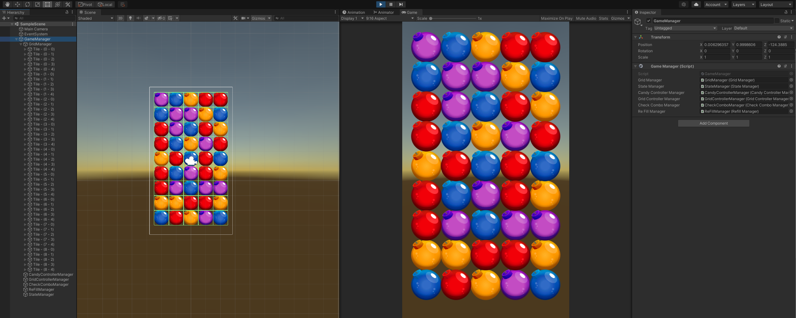
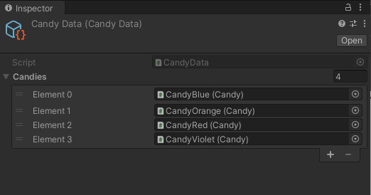

SwapCandyState
Handles player input, performs swaps and validates whether the move can proceed.
This project is useful in my portfolio because it shows the point where I started separating gameplay into explicit states and managers instead of putting everything into one controller.
The biggest challenges were building the grid for the first time, keeping logical positions aligned with visual movement and making state transitions reliable.
Handles player input, performs swaps and validates whether the move can proceed.
Searches the board for valid matches and processes the result.
Fills empty grid positions and restores a playable board.
Owns transitions between gameplay states and keeps the loop explicit.

